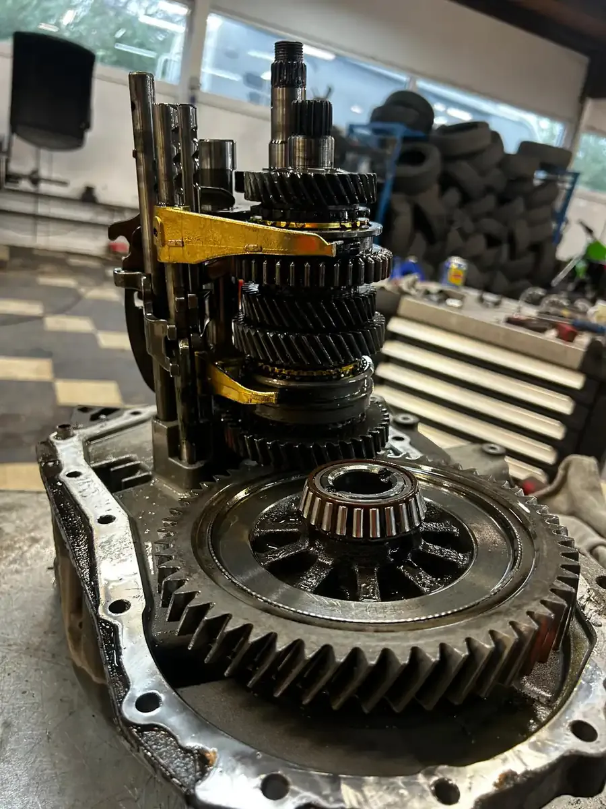

Pédale d'embrayage dure ? Ça patine en côte ? Odeur de brûlé après un embouteillage ? Chez DMT AUTOGROUP, on remplace votre embrayage avec des pièces LuK, Sachs ou Valeo. Kit complet. Volant moteur bi-masse vérifié systématiquement. Prix garage indépendant : 800-1500€ au lieu de 1800-3000€ chez le concessionnaire. Koppelingspedaal stijf? Slipt het bergop? Brandlucht na een file? Bij DMT AUTOGROUP vervangen we uw koppeling met LuK, Sachs of Valeo onderdelen. Compleet kit. Bi-massa vliegwiel systematisch gecontroleerd. Prijs onafhankelijke garage: 800-1500€ in plaats van 1800-3000€ bij de concessie.
Un embrayage, ça ne se répare pas à moitié. Quand le disque est mort, le mécanisme a souffert aussi. Et la butée ? Elle a tourné pendant les mêmes 150 000 km. Changer un seul composant, c'est prendre le risque de rouvrir la boîte dans 6 mois pour finir le travail. On a vu des garages faire ça. Le client paie deux fois la main-d'oeuvre. Brillant. Een koppeling repareer je niet half. Als de schijf versleten is, heeft het mechanisme ook geleden. En het druklager? Dat draait al dezelfde 150 000 km mee. Slechts één onderdeel vervangen is het risico nemen dat je de bak over 6 maanden opnieuw moet openen om het werk af te maken. We hebben garages dat zien doen. De klant betaalt twee keer het arbeidsloon. Briljant.
Chez DMT AUTOGROUP, on remplace toujours le kit complet : disque d'embrayage, mécanisme de pression et butée. C'est la seule approche qui fait sens. La main-d'oeuvre pour accéder à l'embrayage, c'est 80% du coût total — il faut déposer la boîte de vitesses, parfois le sous-berceau, les transmissions. Autant tout faire d'un coup. Bij DMT AUTOGROUP vervangen we altijd het complete kit: koppelingsschijf, drukgroep en druklager. Het is de enige aanpak die logisch is. Het arbeidsloon om bij de koppeling te geraken is 80% van de totale kost — de versnellingsbak moet eruit, soms de subframe, de aandrijfassen. Dan doe je alles beter in één keer.
Le prix chez un concessionnaire ? Entre 1800 et 3000€ selon la voiture. Sur une Audi A4 2.0 TDI, on a vu des devis à 2800€. Une Golf 1.6 TDI ? 2100€ chez VW. Chez nous, le même travail avec des pièces LuK, Sachs ou Valeo — les mêmes fournisseurs que les constructeurs utilisent en première monte — c'est entre 800 et 1500€. Même pièces, même résultat, pas le même prix. De prijs bij een concessie? Tussen 1800 en 3000€ afhankelijk van de auto. Op een Audi A4 2.0 TDI hebben we offertes van 2800€ gezien. Een Golf 1.6 TDI? 2100€ bij VW. Bij ons, hetzelfde werk met LuK, Sachs of Valeo onderdelen — dezelfde leveranciers als de constructeurs gebruiken in eerste montage — dat is tussen 800 en 1500€. Dezelfde onderdelen, hetzelfde resultaat, niet dezelfde prijs.
On travaille sur toutes les marques. VAG évidemment — VW, Audi, Skoda, Seat, CUPRA — mais aussi les françaises, les allemandes, les asiatiques. Un embrayage de Peugeot 308 1.6 HDI, on le fait les yeux fermés. Un BMW 320d F30, pareil. L'important c'est les bonnes pièces et un montage propre. We werken op alle merken. VAG uiteraard — VW, Audi, Skoda, Seat, CUPRA — maar ook de Franse, de Duitse, de Aziatische. Een koppeling van een Peugeot 308 1.6 HDI, dat doen we met onze ogen dicht. Een BMW 320d F30, hetzelfde verhaal. Het belangrijkste zijn de juiste onderdelen en een propere montage.

Le volant moteur bi-masse, c'est cette pièce entre le moteur et l'embrayage qui absorbe les vibrations du diesel. Deux masses reliées par des ressorts. Quand ces ressorts fatiguent, les vibrations passent dans la boîte, dans l'habitacle, partout. Het bi-massa vliegwiel is dat onderdeel tussen de motor en de koppeling dat de trillingen van de diesel opvangt. Twee massa's verbonden door veren. Wanneer die veren vermoeid raken, gaan de trillingen door naar de versnellingsbak, het interieur, overal.
Les symptômes ? Des vibrations au ralenti que vous sentez dans le volant et les pédales. Un bruit de ferraille au point mort — comme un sac de billes — qui disparaît dès que vous appuyez sur la pédale d'embrayage. Un claquement sec au démarrage du moteur. Parfois un grondement sourd en roulant à bas régime en 5ème ou 6ème. De symptomen? Trillingen in het stationair die u voelt in het stuur en de pedalen. Een ratelend geluid in de vrijstand — alsof er knikkers rammelen — dat verdwijnt zodra u het koppelingspedaal indrukt. Een droge klap bij het starten van de motor. Soms een doffe brom bij lage toeren in de 5de of 6de versnelling.
Quand on change un embrayage chez DMT AUTOGROUP, on vérifie TOUJOURS le volant moteur bi-masse. C'est non négociable. On mesure le jeu, on inspecte les ressorts, on vérifie qu'il n'y a pas de traces de chauffe. Si le volant est encore bon, on le garde — on ne pousse pas au remplacement pour gonfler la facture. Mais si il a du jeu ou des marques, on vous le dit cash : c'est maintenant ou c'est dans 20 000 km, et dans 20 000 km il faudra re-démonter toute la boîte. Wanneer we een koppeling vervangen bij DMT AUTOGROUP, controleren we ALTIJD het bi-massa vliegwiel. Dat is niet onderhandelbaar. We meten de speling, inspecteren de veren, controleren of er geen oververhittingssporen zijn. Als het vliegwiel nog goed is, houden we het — we pushen geen vervanging om de factuur op te blazen. Maar als er speling of sporen zijn, zeggen we het recht in uw gezicht: het is nu of het is over 20 000 km, en over 20 000 km moet de hele bak weer eruit.
Le prix d'un volant moteur bi-masse varie beaucoup. Entre 350 et 900€ pour la pièce seule, selon le modèle. La bonne nouvelle ? Si on le fait en même temps que l'embrayage, la main-d'oeuvre supplémentaire est minimale — la boîte est déjà dehors. C'est quand on doit tout redémonter exprès que ça fait mal au portefeuille. De prijs van een bi-massa vliegwiel varieert sterk. Tussen 350 en 900€ voor het onderdeel alleen, afhankelijk van het model. Het goede nieuws? Als we het tegelijk met de koppeling doen, is de extra arbeidskosten minimaal — de bak is al eruit. Het is wanneer we alles apart opnieuw moeten demonteren dat het pijn doet aan de portemonnee.
Vous montez une côte et le moteur hurle à 4000 tours alors que la voiture n'accélère pas ? L'embrayage patine. C'est le signe le plus évident. Le disque est tellement usé que la friction ne passe plus entre le moteur et la boîte. En gros, votre moteur tourne dans le vide. U rijdt een heuvel op en de motor jankt op 4000 toeren terwijl de auto niet versnelt? De koppeling slipt. Dat is het meest voor de hand liggende teken. De schijf is zo versleten dat de wrijving niet meer doorgaat tussen motor en versnellingsbak. Kort gezegd draait uw motor in het luchtledige.
Mais l'embrayage ne lâche pas toujours d'un coup. Souvent, les signes arrivent progressivement. Maar een koppeling begeeft het niet altijd in één keer. Vaak komen de signalen geleidelijk.
La pédale devient dure ou au contraire trop molle. Le point de patinage monte — vous devez lever le pied presque en haut de la course pour que ça accroche. Vous sentez une odeur de brûlé après un créneau serré ou un démarrage en côte. Les rapports passent mal, surtout la marche arrière et la première à froid. Het pedaal wordt stijf, of juist te slap. Het opkomstpunt stijgt — u moet uw voet bijna helemaal bovenaan de slag tillen voordat het pakt. U ruikt een brandgeur na een strakke parkeerbeurt of een heuvelstart. De versnellingen schakelen moeilijk, vooral de achteruit en de eerste bij koude motor.
Un embrayage d'origine tient en moyenne entre 120 000 et 180 000 km. Mais un conducteur qui fait 80% de ville — feux rouges, embouteillages, manoeuvres de parking — peut user son embrayage avant 100 000 km. À l'inverse, quelqu'un qui fait principalement de l'autoroute peut dépasser les 200 000 km sans problème. La conduite, c'est le facteur numéro un. Een originele koppeling gaat gemiddeld tussen 120 000 en 180 000 km mee. Maar een bestuurder die 80% in de stad rijdt — rode lichten, files, parkeerma-noeuvres — kan zijn koppeling voor 100 000 km verslijten. Omgekeerd kan iemand die voornamelijk snelweg rijdt zonder problemen de 200 000 km overschrijden. De rijstijl is de nummer één factor.
Si vous reconnaissez un ou plusieurs de ces symptômes, ne traînez pas. Un embrayage qui patine s'use de plus en plus vite. Ce qui était réparable jeudi peut devenir urgent lundi. Et un embrayage qui casse complètement en roulant, ça veut dire dépanneuse. Als u één of meerdere van deze symptomen herkent, wacht dan niet. Een koppeling die slipt, slijt steeds sneller. Wat donderdag nog te repareren was, kan maandag dringend worden. En een koppeling die volledig breekt tijdens het rijden, dat betekent takelwagen.

La plupart des voitures modernes ont un embrayage à commande hydraulique. Un émetteur (maître-cylindre) sous la pédale, un récepteur (cylindre récepteur) sur la boîte de vitesses, et du liquide hydraulique entre les deux. Quand vous appuyez sur la pédale, le liquide pousse le récepteur qui débraye. De meeste moderne auto's hebben een hydraulisch bediende koppeling. Een hoofdcilinder onder het pedaal, een hulpcilinder op de versnellingsbak, en hydraulische vloeistof ertussen. Wanneer u op het pedaal drukt, duwt de vloeistof de hulpcilinder die ontkoppelt.
Simple en théorie. Mais quand ça fuit, c'est le drame. Simpel in theorie. Maar als het lekt, is het drama.
L'émetteur qui lâche — le joint interne cède, le liquide fuit dans l'habitacle derrière la pédale. La pédale devient molle, puis tombe au sol. Plus d'embrayage, plus de vitesses. Le récepteur qui fuit — plus vicieux, le liquide coule sur la cloche de boîte, ça dégouline sous la voiture. Parfois la pédale fonctionne encore mais de façon aléatoire : tantôt ça passe, tantôt non. De hoofdcilinder die het begeeft — de interne afdichting geeft mee, vloeistof lekt in het interieur achter het pedaal. Het pedaal wordt slap, dan zakt het naar de bodem. Geen koppeling meer, geen versnellingen meer. De hulpcilinder die lekt — lastiger, de vloeistof lekt op de belbehuizing, druipt onder de auto. Soms werkt het pedaal nog maar willekeurig: soms schakelt het, soms niet.
Sur certains modèles — beaucoup de VW, Audi, et françaises récentes — le récepteur d'embrayage est intégré à l'intérieur de la cloche. Ça veut dire qu'il faut déposer la boîte pour le remplacer. Dans ce cas, on propose souvent de faire l'embrayage complet en même temps. La boîte est dehors, la main-d'oeuvre est la même. Autant régler le problème une bonne fois. Op sommige modellen — veel VW, Audi, en recente Franse auto's — is de hulpcilinder geïntegreerd binnenin de belbehuizing. Dat betekent dat de bak eruit moet om hem te vervangen. In dat geval stellen we vaak voor om de volledige koppeling meteen mee te doen. De bak is er al uit, het arbeidsloon is hetzelfde. Dan is het probleem in één keer opgelost.
On purge aussi le circuit hydraulique d'embrayage quand c'est nécessaire. Air dans le circuit ? Pédale spongieuse. Un bon coup de purge et ça repart. Parfois c'est tout ce qu'il faut — 30 minutes de travail, pas besoin de démonter quoi que ce soit. Pour un diagnostic complet, on peut identifier la panne exacte en quelques minutes. We ontluchten ook het hydraulische koppelingscircuit wanneer nodig. Lucht in het systeem? Sponsachtig pedaal. Een goede ontluchting en het werkt weer. Soms is dat alles wat nodig is — 30 minuten werk, niets hoeft gedemonteerd te worden. Voor een volledige diagnose kunnen we de exacte storing in enkele minuten identificeren.
Avec 15 ans d'expérience sur les systèmes d'embrayage, on fait la différence entre un émetteur fatigué et un embrayage en bout de course. Ça évite de remplacer un embrayage complet quand un simple cylindre émetteur à 80€ suffit. Et ça, chez le concessionnaire, on ne vous le dira pas toujours — un embrayage complet rapporte plus qu'un émetteur. Chez nous, on vous donne le vrai diagnostic. Si votre voiture a une DSG, c'est un autre système — on gère ça aussi. Et si votre véhicule a besoin d'une révision mécanique plus large, on peut combiner les interventions. Met 15 jaar ervaring op koppelingssystemen maken we het verschil tussen een vermoeide hoofdcilinder en een koppeling op het einde van haar leven. Dat voorkomt het vervangen van een volledige koppeling wanneer een eenvoudige hoofdcilinder van 80€ volstaat. En dat zal de concessie u niet altijd vertellen — een volledige koppeling brengt meer op dan een hoofdcilinder. Bij ons krijgt u de echte diagnose. Als uw auto een DSG heeft, is het een ander systeem — we doen dat ook. En als uw voertuig een bredere mechanische revisie nodig heeft, kunnen we de ingrepen combineren.
Un embrayage qui patine, c'est remplacement du kit complet — disque, mécanisme, butée. Chez le concessionnaire, comptez 1800-3000€. Chez nous, entre 800 et 1500€ selon le modèle, avec des pièces LuK, Sachs ou Valeo. On vérifie aussi le volant moteur bi-masse. Si il est encore bon, on ne le change pas. Een koppeling die slipt betekent vervanging van het complete kit — schijf, drukgroep, druklager. Bij de concessie rekent u op 1800-3000€. Bij ons, tussen 800 en 1500€ afhankelijk van het model, met LuK, Sachs of Valeo onderdelen. We controleren ook het bi-massa vliegwiel. Als het nog goed is, vervangen we het niet.
C'est le volant moteur bi-masse. Les masses internes ne sont plus amorties, elles claquent au ralenti. En appuyant sur la pédale, vous déchargez le volant et le bruit s'arrête. Si l'embrayage est à changer en même temps, c'est le bon moment — la boîte est déjà sortie. Sinon, ça peut rouler encore un moment, mais le bruit va empirer. Dat is het bi-massa vliegwiel. De interne massa's worden niet meer gedempt, ze klapperen in het stationair. Door op het pedaal te drukken, ontlast u het vliegwiel en stopt het geluid. Als de koppeling tegelijk vervangen moet worden, is dit het juiste moment — de bak is er al uit. Anders kan het nog een tijdje mee, maar het geluid wordt erger.
Non, pas automatiquement. On le contrôle systématiquement — jeu, état des ressorts, traces de chauffe. Si c'est encore dans les tolérances, on le garde. Mais si il y a du jeu excessif, on recommande de le faire maintenant plutôt que de tout redémonter dans quelques mois. Nee, niet automatisch. We controleren het systematisch — speling, staat van de veren, oververhittingssporen. Als het nog binnen de toleranties valt, houden we het. Maar als er te veel speling is, raden we aan het nu te doen in plaats van alles over een paar maanden opnieuw te demonteren.
Entre 120 000 et 180 000 km en moyenne. En ville avec du stop-and-go, certains lâchent avant 100 000 km. Sur autoroute principalement, on voit des embrayages dépasser 200 000 km. La conduite fait toute la différence — quelqu'un qui repose le pied sur la pédale en roulant use son embrayage deux fois plus vite. Gemiddeld tussen 120 000 en 180 000 km. In de stad met stop-and-go begeven sommige het voor 100 000 km. Voornamelijk op de snelweg zien we koppelingen die meer dan 200 000 km meegaan. De rijstijl maakt het verschil — iemand die zijn voet op het pedaal laat rusten tijdens het rijden, verslijt zijn koppeling twee keer zo snel.
Pédale au sol sans résistance = problème hydraulique dans 95% des cas. L'émetteur ou le récepteur a lâché. Parfois un simple remplacement de l'émetteur suffit — c'est une pièce à 60-120€. Parfois c'est le récepteur intégré à la boîte, et là il faut démonter. Appelez-nous, on vous guide par téléphone. Pedaal op de bodem zonder weerstand = hydraulisch probleem in 95% van de gevallen. De hoofdcilinder of hulpcilinder heeft het begeven. Soms volstaat een eenvoudige vervanging van de hoofdcilinder — dat is een onderdeel van 60-120€. Soms is het de hulpcilinder geïntegreerd in de bak, en dan moet alles gedemonteerd worden. Bel ons, we begeleiden u telefonisch.
Kit embrayage complet dès 800€ — Pièces LuK, Sachs, Valeo
Lundi — Vendredi · 08:30 — 18:00
Mechelsesteenweg 270, 1933 ZaventemCompleet koppelingkit vanaf 800€ — LuK, Sachs, Valeo onderdelen
Maandag — Vrijdag · 08:30 — 18:00
Mechelsesteenweg 270, 1933 Zaventem